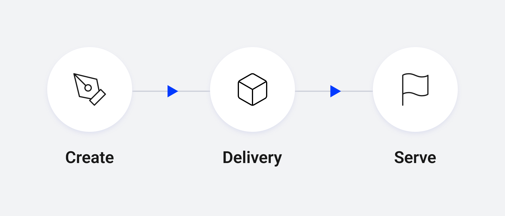
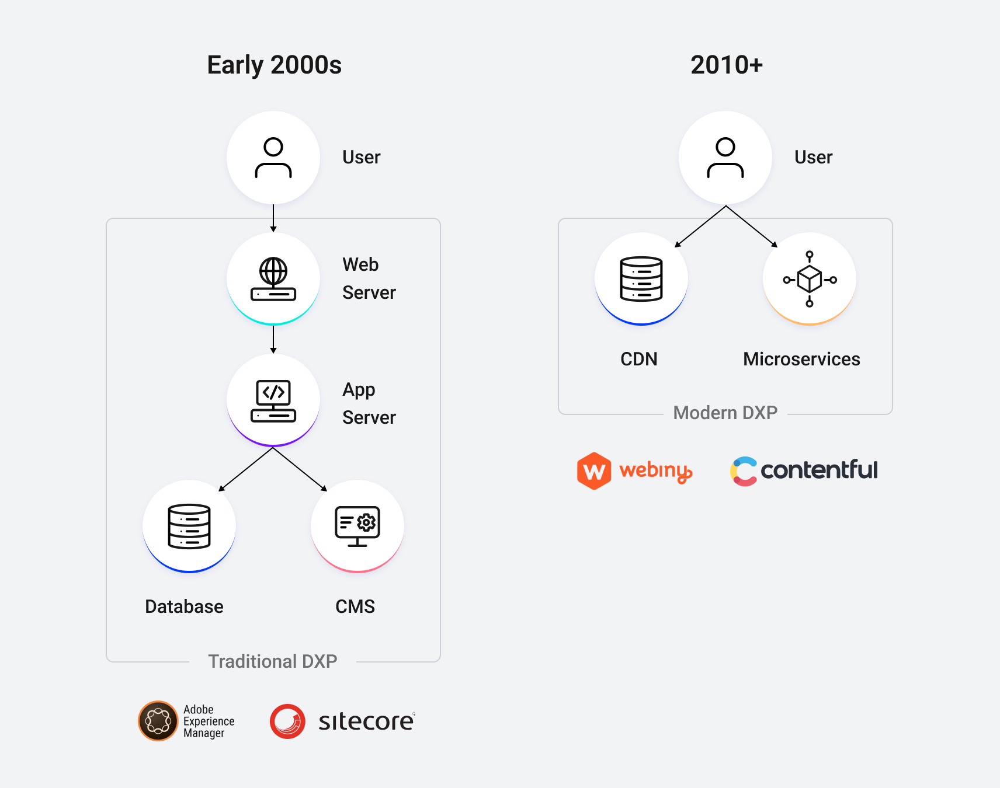
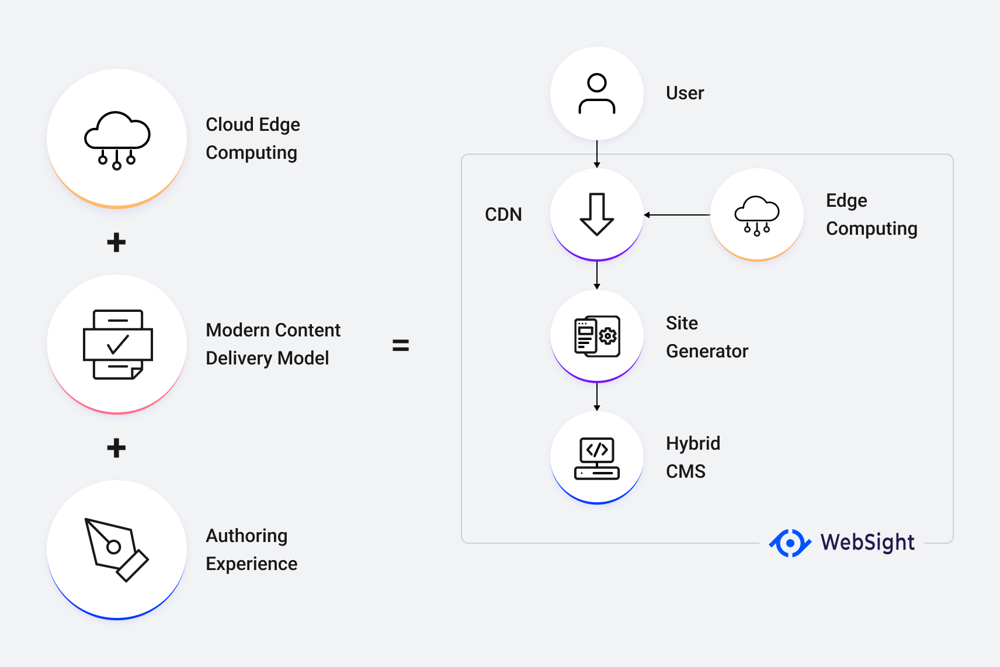

On the road to the perfect DXP
THE PROBLEM
It is very easy to get lost when it comes to choosing the technology stack driving your digital projects. It may be surprising, but WordPress, Joomla, and Drupal are still the most popular options for small and medium companies. Larger ones often choose full-flagged DXPs like Adobe Experience Manager, Sitecore, or Magnolia to fulfill their enterprise needs. All of the solutions above are mature and battle-tested, they adapt to changing world but still use best practices from previous decades.
I am not the first one who noticed it. We need applications that are more secure, faster, easier to scale and at the same time cheaper to run and simpler. There are many emerging players available on the market including Jamstack-compatible solutions like Contentful, Webiny, Strapi, and so on. Single Page Applications' popularity and requirements of supporting multiple channels helped Headless CMSs to successfully enter the market. The only problem is that there is always a tradeoff. Headless solutions are often designed to solve certain problems and operate in cloud-native environments, but at the same time are lacking enterprise features (like WYSIWYG authoring, granular role-based security, and multi-site management to name a few), mostly because of simplified underlying data structure (designed for structured content), lightweight programming models, and lack of maturity.
We asked ourselves if it is possible to have a solution that combines the advantages of both approaches?? Have mature, tested, and feature-rich platforms and the ability to deliver experiences at web-scale in cloud-native architectures?
THE OBSERVATION
Like many things in technology, we can search for analogies in real life.
- The beer is brewed in breweries, but later distributed to bars to make more people enjoy it in a better environment
- Food comes from multiple sources like farmlands or sea but is later processed and delivered to groceries or served in restaurants
- A movie is created in a studio, and later watched in multiple places like a cinema or at home
- Games are developed in studios, but people enjoy it using game consoles or PCs
The critical point here is that the place where you create and develop is different from where you consume it. It’s done for multiple reasons: scalability, security, performance, cost, and overall experience.
THE IDEA
To deliver enterprise experiences at a web scale we decided to resolve the core problem of recent platforms. When you take a look at mature CMS systems like WordPress or AEM, you’ll see that publishers or renderers are almost always technological copies of authoring environments. Of course, it was a natural step, if one instance is not enough to deliver the content, you multiply it and eventually add caching layers to hide architecture limitations. But is it the way it should be?
In our vision, CMS has to focus purely on the authoring experience. From the programmer's point of view, we see it as a distributed IDE for content authors. Optimized for content creation, management, and integration of multiple data sources. It should be created to provide a unified environment for preparing customer experiences. What’s important - data itself may come from internal data storage (which should be designed to handle structured and unstructured data) or external sources. Examples of data sources are PIM systems, enterprise applications, or external databases. Everything has to be managed in (not served by) CMS, which plays the role of the content hub.

Experiences, once created, should be delivered to the end-users via another, dedicated environment - the runtime. At the same time, we want to avoid any runtime dependencies between runtime and authoring environments. Here the push model comes to play. Runtime should be designed to serve experiences at a true web scale. No more publishers, content synchronization, dispatchers, read-only replicas, and instance multiplication. What could be the ideal place to do that? The answer is simple, the cloud.
THE SOLUTION

A simplified diagram presents the options we have now. We can choose mature, feature-rich enterprise solutions (on the left), which are often part of closed, proprietary ecosystems, or choose lighter cloud-native alternatives (on the right). Mature CMS’es seem to not keep up with the progress, because of server-oriented architectures which were designed in the 2000s to work on physical machines in dedicated data centers. New headless systems are limited and not complete solutions. They are lacking the integration layer, and the dynamic content is orchestrated directly in the browser, which calls microservices. What if we merge two and take the best from two worlds?

Well, we did it and the result is WebSight. As we already know it has two major parts:
- WebSight CMS - enterprise-grade authoring system created using battle-tested technologies. Apache Sling, Apache Felix, and Apache Oak are a foundation that allows us to take advantage of years of experience from other players. At the same time, we had a chance to avoid many pitfalls and use only components which are ready to work in a container-oriented world. We took the advantage of being able to create our solution from the ground.
- WebSight Runtime - cloud-native architecture designed to serve experiences in a secure, scalable, and performant way. Its core is cloud-agnostic, but our first implementation is based on AWS. The difference with Jamstack is that the integration and rendering layers are in the cloud, not in a browser. Serverless functions give us more flexibility and fully replace the need for publisher instances at runtime.
NEXT STEPS
At the time of writing this post, WebSight is a functional product. We use it internally to create the first projects and work on the first public release. We’ll be sharing here the insights into the architecture and development process, so stay tuned, because there's more to come.